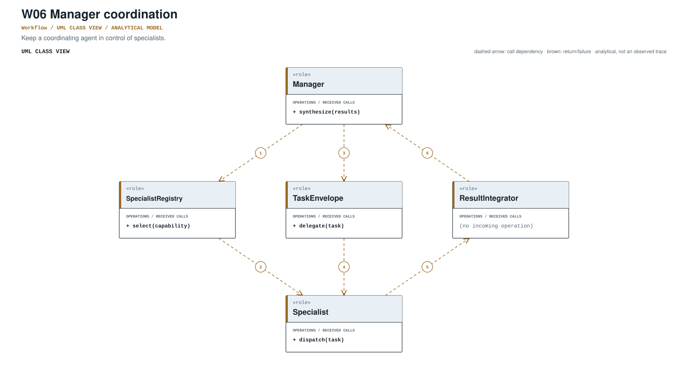
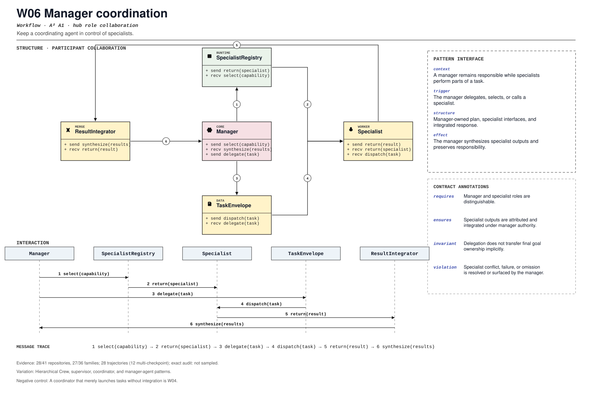

PROMPT SKETCH
Let the manager own task assignment and integration. Specialists may propose outputs, but the manager must attribute each contribution and decide what enters the final result.Keep a coordinating agent in control of specialists.
manager_owned_specialist_workRECORD STATUSCandidate · v0.1.0The proposed contract drawn as participant roles, received calls, and numbered dependencies.

The same roles and calls as a class collaboration and a numbered message sequence.

Where the mechanism applies. All four dimensions belong to the proposed match, not just its vocabulary.
The obligation that clients, operators, and auditors should be able to rely on.
A coordinator that merely launches tasks without integration is W04.
The hot spot is admitted only where the protected semantics survive.
Hierarchical Crew, supervisor, coordinator, and manager-agent patterns.
Test specialist disagreement, failure, and manager synthesis.
Did managers gain explicit budgets and specialist authorization?
An illustrative prompt and a small design sketch for the proposed contract. Names and APIs are invented; this is not a repository excerpt.
Let the manager own task assignment and integration. Specialists may propose outputs, but the manager must attribute each contribution and decide what enters the final result.def manage(task, specialists, manager):
assignments = manager.assign(task, specialists)
contributions = []
for specialist, subtask in assignments:
output = specialist.run(subtask)
contributions.append(Attribution(specialist.id, subtask.id, output))
return manager.integrate(task, contributions)Illustrative design sketch. Attribution is the manager's contract; unlabeled specialist text is not integration. This example is a teaching aid, not implementation evidence or a conformance claim.
The frozen rule that retrieves this record, the canonical source exemplar, and the control that should stay unmatched.
manager_owned_specialist_work(?i)\b(?:manager[_-]?agent|supervisor|coordinator[_-]?agent|manager[_-]?coordination)\bFrozen expression, v0.1.0. A match is a retrieval cue, not a confirmed implementation.lib/crewai/src/crewai/crew.py:1533Support: lib/crewai/tests/test_crew.py:1Up to five public files retrieved by the frozen cue and pinned to the audited commit. A match is a place to inspect, not a confirmed implementation.
lib/crewai/src/crewai/crew.py:1533CANONICAL SOURCE02agno-agi/agnolibs/agno/agno/sandbox/agentcore/server.py:86RETRIEVAL CUE03anomalyco/opencodepackages/core/src/instance.ts:33RETRIEVAL CUE04bytedance/deer-flowbackend/app/channels/runtime_config_store.py:15RETRIEVAL CUE05cline/clineapps/cli/src/commands/connect.ts:122RETRIEVAL CUEEach layer answers a different question. Do not substitute retrieval for review.
A concrete source anchor is available for this proposed record. It is one exemplar, not evidence that all repositories—or every contract field—conform.
Review boundary: this candidate and its specification come from an AI-assisted study. Independent human validation remains open.
75.0% of repository families in the frozen panel have at least one current cue, historical cue, or canonical source layer. This is not confirmed prevalence.
Current lexical-cue repositories: 28 / 417abc196a176alib/crewai/src/crewai/crew.py:1533lib/crewai/tests/test_crew.py:1Hierarchical process creates a manager agent.
(?i)\b(?:manager[_-]?agent|supervisor|coordinator[_-]?agent|manager[_-]?coordination)\bThis expression is a discovery instrument only. A match is a retrieval cue—not a confirmed implementation, pointcut match, or contract proof.